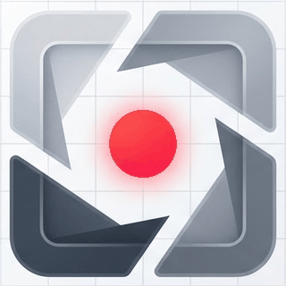

Grave a tela. Só isso.
Cap é um gravador de tela minimalista para Windows. Instalador de poucos MB, sem janelas demais, com uma pílula discreta no canto da tela.

Tudo o que você precisa, nada além
Tela, janela ou área
Escolha o que gravar: o monitor inteiro, uma janela específica ou um retângulo desenhado por você.
Webcam arrastável 1:1
Uma bolha quadrada com sua câmera, que você posiciona onde quiser sobre a gravação.
Microfone com medidor
Veja o nível do áudio em tempo real antes e durante a gravação.
Atalho Ctrl+Shift+R
Inicie e pare a gravação de qualquer lugar, sem tirar as mãos do teclado.
Leve de verdade
Instalador de poucos MB e consumo baixo de memória e CPU enquanto grava.
Por que é leve
Cap usa o encoder nativo do Windows (Media Foundation) para gerar o vídeo. Não embute FFmpeg nem outros binários pesados, e a interface é feita com Tauri, que reaproveita o WebView do sistema.
O resultado é um instalador pequeno, abertura instantânea e gravações que não disputam recursos com o que você está mostrando.
- Poucos MB
- Sem FFmpeg
- Encoder nativo
Instalação
- Baixe o arquivo
.msina página de releases. - Abra o instalador e conclua o assistente.
- Pressione Ctrl+Shift+R para começar a gravar.
Aviso do SmartScreen. O MSI ainda não é assinado digitalmente, então o Windows pode exibir “O Windows protegeu o seu computador”. Clique em Mais informações e depois em Executar assim mesmo. O código-fonte está aberto para você conferir.